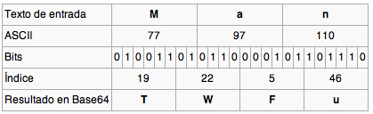

base64 is a text encoding method that uses only the ASCII printable characters. The range of characters used is formed by the ranges A-Z, a-z and 0-9 plus the characters "+" and "/". Besides them, the symbol "=" is used as a fill character.
By using 64 characters, these can be represented with 6 bits because 26=64. Base64 works by transforming groups of three bytes (three ASCII characters) into 4 characters codified in base64.
Let's see an example:

As we can see, the character "M" has its correponding ASCII value, which in this case it is 77. From the 8 bits needed to represent this value, the first 6 ones are used to establish the correspondence with the fisrt character in base64 format.
This way the process is carried on until reaching the end of the text. If the number of characters is not a multiple of threem the fill character "=" is used to complete the sequence. This causes that the length of a base64 encoded text is always a multiple of four.
This encoding format is widely spread nowadays because it only uses printable characters. It is used to encode signatures and in some methods of encoding electronic mail.